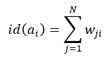
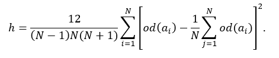
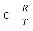

1. Static analysis is performed on the static analysis tab. To switch to this tab from another tab, click the "Static analysis" header.
2. The left part of the tab contains a table with characteristics of individual concepts:
2.1. Out-degree, defined as the total non-transitive influence of a concept on the others:
2.2. In-degree, defined as the total non-transitive dependence of a concept on the others:

2.3. Centrality:

3. The table can be sorted in ascending or descending order by clicking the corresponding column header. After the first click, sorting is ascending; after the second click, descending. By default, the table is sorted alphabetically by concept name.
4. The first row in the upper part of the tab contains characteristics of the FCM as a whole:
4.1. Density (clustering coefficient):

where N is the number of concepts and C is the number of weights.
4.2. Hierarchy index:

4.3. Complexity:

where R is the number of concepts that have incoming weights, and T is the number of concepts that have outgoing weights.
5. The influence calculation settings are configured in the second row of the upper part of the tab. You need to specify the concept being analyzed, the mode that determines whether the influence on the concept or the influence of the concept on all others is calculated, and the number of steps over which the concept influence is propagated transitively. The resulting influence is displayed graphically in the area on the right as concept colors based on the colors of the terms corresponding to the computed influence. At the same time, weight colors match the colors used on the graph tab.